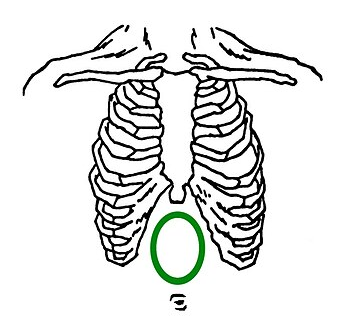

Disostruzione delle vie aeree: adulto, bambino, lattante
Che cosa fare quando un corpo estraneo blocca le vie aeree, secondo le linee guida 2025 di Italian Resuscitation Council.
Misericordia di Ariccia
Presentazione per i corsi di disostruzione delle vie aeree della Misericordia di Ariccia. Prima di cominciare: presentatevi, dite quanto dura la lezione e che le manovre si provano solo sui manichini, mai sui compagni. Fonti di tutta la presentazione: Linee guida RCP 2025 IRC, capitolo 12 «Primo soccorso» (adulto) e capitolo 9 «Supporto delle funzioni vitali in età pediatrica» (bambino e lattante), lette il 20/11/2026 su ircouncil.it.
Corso Disostruzione
Prima di cominciare
Queste slide accompagnano il materiale ufficiale del corso: non lo sostituiscono.
Il riferimento sono le linee guida RCP 2025 di Italian Resuscitation Council (IRC), versione italiana delle linee guida europee ERC 2025.
Le manovre si imparano provandole sui manichini, con l'istruttore che corregge. Mai sulle persone sane.
Nel dubbio vale sempre quello che dicono il manuale del corso e l'istruttore.
Misericordia di Ariccia
Dite chiaramente che il materiale di riferimento è quello del corso (programma del corso riconosciuto e manuale IRC). Le compressioni addominali su una persona sana possono fare male: in aula si provano solo sui manichini o sui giubbotti da addestramento. Fonte: Linee guida RCP 2025 IRC, capitolo 12 «Primo soccorso», p. 3 (il primo soccorso comprende anche l'ostruzione delle vie aeree) e capitolo 9, p. 28.
Corso Disostruzione
Perché chi è presente fa la differenza
Il soffocamento è frequente, soprattutto nei bambini piccoli e negli anziani.
I bambini portano alla bocca piccoli oggetti; gli adulti soffocano spesso con carne, frutta a guscio, uva e altri cibi.
Se l'ostruzione è completa, in pochi minuti la persona perde conoscenza e il cuore si ferma.
In un grande studio, chi era presente è intervenuto per primo in 643 casi e ha liberato le vie aeree in 492: di questi, il 97,6% è sopravvissuto.
Misericordia di Ariccia
Messaggio: si interviene subito, prima che arrivino i soccorsi, perché l'ostruzione completa porta all'arresto cardiaco in pochi minuti. I numeri (643 casi, 492 risolti pari al 76,5%, 97,6% di sopravvissuti fra questi) vengono dal più grande studio osservazionale citato da IRC 2025, capitolo 12 «Primo soccorso», p. 28. Per i bambini il capitolo 9, p. 64, dice che semplici interventi di chi è presente funzionano in oltre il 75% dei casi.
Corso Disostruzione
Riconoscere il soffocamento
Adulto e ragazzo
All'improvviso non riesce a parlare né a tossire.
Succede soprattutto mentre mangia.
Spesso si porta le mani alla gola.
Lattante e bambino piccolo
Non riesce a piangere con forza, o a tossire.
Succede durante il pasto o il gioco senza sorveglianza.
Chiedi subito: «Stai soffocando?» Se fa sì con la testa e non riesce a parlare, è un'ostruzione grave.
Misericordia di Ariccia
Fonti: adulto, IRC 2025 capitolo 12, p. 11 (sospettare il soffocamento se all'improvviso non riesce a parlare o tossire, soprattutto durante il pasto; chiedere «Sta soffocando?»); bambino e lattante, capitolo 9, p. 29 (non riesce a parlare o a piangere con vigore, durante il pasto o il gioco senza supervisione). Le mani alla gola sono nella figura 5 del capitolo 12 (p. 12) e nella scheda del sito; non sono un criterio scritto nel testo. Errore frequente: aspettare che diventi cianotico.
Corso Disostruzione
Ostruzione lieve o grave?
Lieve (parziale)
L'aria passa ancora: tossisce con forza, parla, piange.
Incoraggia a tossire e resta accanto: controlla se peggiora.
Grave (completa)
Non parla, tosse debole o assente, respira a fatica o non respira.
Agisci subito: 112, colpi tra le scapole e compressioni.
La tosse è la manovra più efficace finché funziona: non battere sulla schiena di chi tossisce bene.
Misericordia di Ariccia
Fonte: IRC 2025, capitolo 12 «Primo soccorso», p. 28: nell'ostruzione parziale l'aria passa e la persona tossisce o parla; nell'ostruzione completa non parla, la tosse è debole o assente, respira a fatica o non respira. La tosse crea pressioni alte e prolungate e può espellere il corpo estraneo; colpi e compressioni sono riservati a chi non riesce a tossire o parlare. Il passaggio alla manovra avviene quando la tosse diventa inefficace o la persona si stanca (stessa pagina; capitolo 9, p. 29 e figura 22, p. 28).
Corso Disostruzione
Quando chiamare il 112
Appena la tosse non basta più (non tossisce, non parla, non piange): chiama subito il 112, o fallo chiamare da chi è vicino.
Metti il vivavoce e intanto comincia le manovre: l'operatore ti guida.
Se sei da solo con un bambino, chiama al più tardi quando perde conoscenza.
Non aspettare che perda conoscenza per chiamare, se puoi farlo prima.
Misericordia di Ariccia
Fonti: adulto, IRC 2025 capitolo 12, p. 11 («chiamare immediatamente» i soccorsi) e p. 5, tabella 1 (chiamare sempre aiuto come principio generale); bambino, capitolo 9, p. 29 (chiamare o far chiamare appena possibile, al più tardi quando perde coscienza) e algoritmo della figura 22, p. 28 (tosse non efficace → chiamare il 112/118 → manovre). Nel Lazio il numero unico è il 112. Errore frequente: chiamare solo quando la persona è già incosciente.
Corso Disostruzione
Adulto: la sequenza
TosseSe tossisce, incoraggialo a continuare.
5 colpitra le scapole, se la tosse non basta più
5 compressioniaddominali, se i colpi non bastano
Perde conoscenza?Rianimazione cardiopolmonare
Alterna 5 colpi e 5 compressioni finché l'ostruzione si risolve o la persona non risponde più. Il 112 si chiama subito.
Misericordia di Ariccia
È la «strategia progressiva» delle linee guida 2025: tosse, poi colpi interscapolari, poi compressioni addominali (IRC 2025, capitolo 12, p. 5, tabella 1, e p. 11; figura 5 a p. 12). Si comincia dai colpi perché le compressioni addominali come primo intervento risolvono meno spesso e causano più lesioni (p. 28). «Fino a 5»: ci si ferma appena l'ostruzione si risolve.
Corso Disostruzione
Adulto: i colpi tra le scapole
Mettiti dietro la persona, un po' di lato, e falla piegare in avanti sostenendole il petto con una mano.
Con la base del palmo, dalla parte del mignolo, dai un colpo deciso tra le scapole, al centro della schiena.
Fino a 5 colpi: dopo ognuno guarda se l'ostruzione si è risolta.
Misericordia di Ariccia
Fonte: IRC 2025, capitolo 12, p. 28: posizionarsi dietro la persona e usare l'eminenza ipotenar (la parte carnosa del palmo dalla parte del mignolo, vicino al polso) per colpire tra le scapole al centro della schiena; fino a 5 colpi se non tossisce o la tosse diventa inefficace (p. 11). La persona piegata in avanti è nella figura 5, p. 12 (per il bambino è scritto nel capitolo 9, p. 29). Errori frequenti: colpi troppo deboli, colpi sul collo o in basso sulla schiena, persona dritta invece che piegata in avanti. Disegno nel disegno: la mano è vista dal palmo.
Corso Disostruzione
Adulto: le compressioni addominali
Resta dietro, circonda con le braccia la parte alta dell'addome e fai piegare la persona in avanti.
Chiudi il pugno e mettilo tra l'ombelico e l'arco delle costole.
Afferra il pugno con l'altra mano e tira con decisione in dentro e in su.
Fino a 5 compressioni, poi di nuovo 5 colpi tra le scapole.

Il punto: sopra l'ombelico, sotto la punta dello sterno. Disegno di pubblico dominio (US Army Medical Department Center and School, da Wikimedia Commons).
Misericordia di Ariccia
Fonte: IRC 2025, capitolo 12, p. 28: dietro la persona, braccia attorno alla parte superiore dell'addome, inclinarla in avanti, pugno tra l'ombelico e il margine costale, afferrarlo con l'altra mano e tirare con decisione verso l'interno e verso l'alto; fino a 5 compressioni se i colpi interscapolari non funzionano. È la manovra di Heimlich. Errori frequenti: pugno sullo sterno o sulle costole (rischio di fratture), spinta solo all'indietro e non anche verso l'alto, persona non piegata in avanti. L'immagine mostra solo il punto; la tecnica si prova sul manichino.
Corso Disostruzione
Alternare, e fermarsi al momento giusto
Se dopo 5 compressioni l'ostruzione non si è risolta, alterna 5 colpi e 5 compressioni.
Fermati appena la persona torna a tossire, a parlare o a respirare: spesso basta una sola tecnica.
Continua finché l'ostruzione si risolve o la persona non risponde più: allora si passa alla rianimazione.
In uno studio del 2024 solo il 16% dei soccorritori ha alternato le due tecniche: molte ostruzioni si risolvono prima.
Misericordia di Ariccia
Fonte: IRC 2025, capitolo 12, pp. 28-29 (alternare 5 colpi interscapolari e 5 compressioni addominali fino alla risoluzione o finché la persona diventa non responsiva; molte ostruzioni si risolvono con una sola tecnica; studio di coorte del 2024 con il 16% di soccorritori che hanno alternato). Esercizio: fate ripetere ai corsisti il ciclo sul manichino, contando ad alta voce «uno… cinque».
Corso Disostruzione
Bambino (sopra l'anno di età)
La tecnica è la stessa dell'adulto, adattata alla sua statura:
Se è un bambino grande o un ragazzo, incoraggialo a tossire.
Se la tosse non basta: fallo piegare in avanti e dai fino a 5 colpi tra le scapole.
Poi fino a 5 compressioni addominali: dietro di lui, pugno tra l'ombelico e la punta dello sterno, in dentro e in su.
Alterna 5 e 5 finché è cosciente. Fermati subito se tossisce, respira rumorosamente o piange.
Misericordia di Ariccia
Fonte: IRC 2025, capitolo 9 «Supporto delle funzioni vitali in età pediatrica», p. 29 e figure 17a-17b, p. 30: nel bambino e nell'adolescente colpi interscapolari facendolo piegare in avanti, poi compressioni addominali con il pugno tra l'ombelico e l'apofisi xifoide; alternare finché è cosciente; interrompere appena compaiono segni di risoluzione (tosse, respiro rumoroso, pianto). Le compressioni addominali possono essere persino più efficaci nei bambini che negli adulti (p. 65). Con un bambino piccolo il soccorritore si abbassa alla sua altezza: lo si mostra sul manichino.
Corso Disostruzione
Lattante (sotto l'anno): 5 pacche dorsali
Giralo a pancia in giù sul tuo avambraccio, e appoggia l'avambraccio sulla tua coscia.
Sostieni la testa con la mano, tenendo la mandibola, senza premere sulla gola.
Tieni la testa più in basso del torace.
Dai fino a 5 pacche decise tra le scapole.
Misericordia di Ariccia
Fonte: IRC 2025, capitolo 9, p. 29 e figura 16a, p. 30: lattante prono sull'avambraccio, con l'avambraccio appoggiato sulla gamba del soccorritore; sostenere il capo con la mano; testa più in basso del torace per sfruttare la gravità; colpo vigoroso tra le scapole, fino a 5 volte o fino alla risoluzione. Errori frequenti: dita che premono sulle parti molli del collo, lattante tenuto in orizzontale o con la testa più alta, pacche troppo leggere. Sul manichino: girare il lattante «a sandwich» fra i due avambracci, sostenendo sempre la testa.
Corso Disostruzione
Lattante: 5 compressioni toraciche
Giralo a pancia in su e appoggialo sulle tue ginocchia.
Circonda il torace con le mani e metti i due pollici sulla metà inferiore dello sterno.
Comprimi come nella rianimazione, ma più deciso: fino a 5 compressioni.
Alterna 5 pacche e 5 compressioni finché è cosciente.
Misericordia di Ariccia
Fonte: IRC 2025, capitolo 9, p. 29 e figura 16b, p. 30: lattante supino sulle ginocchia del soccorritore; tecnica a due pollici come nella RCP ma comprimendo lo sterno in modo più deciso; fino a 5 volte o fino alla risoluzione; poi alternare con le pacche finché è cosciente. Il punto è la metà inferiore dello sterno (capitolo 9, p. 63). Nel disegno i pollici stanno sullo sterno appena sotto la linea dei capezzoli, le altre dita circondano il torace. Errori frequenti: usare due dita (tecnica del 2021), premere sull'addome, compressioni troppo leggere.
Corso Disostruzione
Nel lattante, mai compressioni addominali
Lattante (sotto l'anno)
5 pacche dorsali alternate a 5 compressioni toraciche, con i due pollici.
Bambino, ragazzo, adulto
5 colpi tra le scapole alternati a 5 compressioni addominali.
Nel lattante niente manovra di Heimlich: le linee guida prevedono solo le compressioni sul torace.
Misericordia di Ariccia
Fonte: IRC 2025, capitolo 9, p. 29 e algoritmo della figura 22, p. 28: nel lattante colpi interscapolari alternati a compressioni toraciche; nel bambino e nell'adolescente colpi interscapolari alternati a compressioni addominali (p. 65: «compressioni addominali nei bambini più grandi o compressioni toraciche nel lattante»). Il testo non usa la parola «mai»: la regola del corso e del sito («mai Heimlich nel lattante») discende dal fatto che per il lattante è prevista solo la compressione toracica.
Corso Disostruzione
Se perde conoscenza: rianimazione
Adulto
Accompagnalo a terra e comincia subito le compressioni toraciche, come nel BLS: 30 e 2.
Se nessuno l'ha ancora fatto, chiama il 112.
Bambino e lattante
Comincia subito con 5 ventilazioni di soccorso, poi le compressioni.
Chi ha fatto il corso pediatrico usa 15 e 2, gli altri 30 e 2.
Le compressioni sul torace aumentano la pressione nelle vie aeree e possono anche liberarle. Se il torace non si alza con le ventilazioni, pensa a un corpo estraneo.
Misericordia di Ariccia
Fonti: adulto, IRC 2025 capitolo 12, p. 29 (se diventa non responsivo con respiro assente o anormale si iniziano le compressioni secondo il BLS standard; generano pressioni nelle vie aeree e una gittata cardiaca) e capitolo 4 «BLS adulto», p. 9 (30:2; se il torace non si solleva dopo due tentativi di ventilazione, considerare l'ostruzione da corpo estraneo). Bambino e lattante, capitolo 9, p. 29 (RCP con 5 ventilazioni di soccorso appena perde coscienza) e pp. 23-24 (15 compressioni, poi 15:2 se addestrati al PBLS, altrimenti 30:2). Il DAE si usa appena disponibile, come in ogni arresto cardiaco.
Corso Disostruzione
Niente dita in bocca alla cieca
Non infilare le dita in bocca per cercare un oggetto che non vedi: puoi spingerlo più in fondo e ferire la gola.
Togli l'oggetto con le dita solo se lo vedi chiaramente in bocca.
Nel bambino: un solo tentativo, e solo per un oggetto ben visibile.
Sui dispositivi ad aspirazione in commercio le linee guida non si esprimono né a favore né contro: mancano prove affidabili.
Misericordia di Ariccia
Fonti: IRC 2025, capitolo 12, p. 11 (mai esplorazioni cieche con le dita) e p. 29 (la rimozione alla cieca può peggiorare l'ostruzione o ledere i tessuti molli; rimozione con le dita solo se l'ostruzione è chiaramente visibile nella cavità orale); capitolo 9, p. 29 (niente manovre alla cieca, un solo tentativo per un corpo estraneo chiaramente visibile). Dispositivi ad aspirazione: nessuna raccomandazione a favore o contro per evidenze insufficienti (capitolo 12, pp. 29-30; capitolo 9, pp. 29 e 65). Se un corsista li ha in casa, non devono ritardare colpi, compressioni e RCP.
Corso Disostruzione
Dopo: sempre dal medico
Chi ha ricevuto compressioni addominali o toraciche va sempre fatto vedere da un medico, anche se sta bene.
Le manovre possono causare lesioni interne che all'inizio non si notano.
Nel bambino, a ostruzione risolta, serve una visita medica urgente.
Spiega all'operatore del 112 o al medico quali manovre hai fatto e quante.
Misericordia di Ariccia
Fonti: IRC 2025, capitolo 12, p. 11 (chi è stato trattato con compressioni addominali o toraciche per soffocamento dovrebbe essere valutato da un medico per possibili complicanze o lesioni interne) e p. 30 (case report di lesioni gravi dopo le compressioni addominali, meno dopo colpi e compressioni toraciche); capitolo 9, figura 22, p. 28 («necessaria visita medica urgente» a ostruzione risolta). Il riquadro blu è un consiglio pratico del corso, non una frase delle linee guida.
Corso Disostruzione
Casi particolari
Le linee guida 2025 non danno indicazioni specifiche per la donna in gravidanza avanzata, la persona con obesità, chi soffoca da solo o chi è sulla sedia a rotelle.
Per chi è solo quando soffoca non ci sono studi: non si sa che cosa sia davvero fattibile.
Se la persona perde conoscenza vale per tutti la rianimazione standard, anche con obesità.
Per questi casi segui il materiale del corso e l'istruttore, senza improvvisare manovre che non hai provato.
Misericordia di Ariccia
Controllato il 20/11/2026: il capitolo 12 «Primo soccorso» (pp. 11, 28-30), il capitolo 9 pediatrico (p. 29) e il capitolo 6 «Circostanze speciali» di IRC 2025 non trattano la disostruzione in gravidanza, nell'obesità o l'auto-disostruzione. Il capitolo 12, p. 29, dice che non sono stati identificati studi su persone sole al momento dell'ostruzione. Il capitolo 4 «BLS adulto», p. 6 (tabella 1), raccomanda la RCP standard 30:2 senza modifiche nelle persone obese in arresto cardiaco. Se il manuale del vostro corso insegna varianti (per esempio le compressioni toraciche in gravidanza), presentatele come indicazione del corso, non come raccomandazione IRC 2025.
Corso Disostruzione
Che cosa cambia rispetto al 2021
L'ostruzione dell'adulto è passata dal capitolo del BLS a quello del primo soccorso.
È scritta come strategia progressiva: prima la tosse, poi i colpi tra le scapole, poi le compressioni addominali.
Nel lattante le compressioni toraciche si fanno con i due pollici e le altre dita intorno al torace, non più con due dita.
Sui dispositivi ad aspirazione nessuna raccomandazione, a favore o contro.
Misericordia di Ariccia
Fonti: 1) IRC 2025, capitolo 4 «BLS adulto», p. 6, tabella 1 (argomenti rimossi: l'ostruzione da corpo estraneo è spostata nel capitolo Primo soccorso); 2) capitolo 12, p. 5, tabella 1 (ostruzione delle vie aeree, «non incluso» nel primo soccorso 2021: strategia progressiva tosse, colpi dorsali, compressioni addominali); 3) capitolo 9, p. 7, tabella 1 e p. 65 (due pollici con le altre dita che circondano il torace al posto della tecnica a due dita: compressioni più profonde, più facile da spiegare al telefono, una sola tecnica per RCP e disostruzione); 4) capitolo 12, pp. 29-30 e capitolo 9, p. 65. La sequenza delle manovre in sé (5 colpi, 5 compressioni, alternate) non è cambiata.
Corso Disostruzione
Riepilogo
Adulto
Bambino (sopra 1 anno)
Lattante (sotto 1 anno)
Tossisce
incoraggia la tosse
incoraggia la tosse
lascialo tossire e piangere, osserva
Non tossisce
112 subito
112 appena possibile
112 appena possibile
Manovre
5 colpi + 5 compressioni addominali
5 colpi + 5 compressioni addominali
5 pacche + 5 compressioni toraciche (due pollici)
Perde conoscenza
RCP 30:2
5 ventilazioni, poi RCP
5 ventilazioni, poi RCP
Dopo
sempre dal medico; mai dita in bocca alla cieca
Misericordia di Ariccia
Riepilogo delle slide precedenti (IRC 2025, capitolo 12, pp. 11 e 28-30; capitolo 9, pp. 28-29). «Lascialo tossire e piangere» per il lattante: la tosse e il pianto vigoroso indicano che l'aria passa (capitolo 9, p. 29; scheda «Soffocamento nel lattante» del sito). Chiudete con le prove pratiche sui manichini adulto, bambino e lattante.
Corso Disostruzione
Fonti e crediti delle immagini
Linee guida RCP 2025, Italian Resuscitation Council (versione italiana delle linee guida ERC 2025): capitolo 12 «Primo soccorso», capitolo 9 «Supporto delle funzioni vitali in età pediatrica», capitolo 4 «BLS adulto» — ircouncil.it/linee-guida-rcp-2025, consultate il 20/11/2026.
Slide 9, disegno del punto delle compressioni addominali: «Abdominal thrusts against choking», US Army Medical Department Center and School, pubblico dominio (opera del governo degli Stati Uniti), da Wikimedia Commons; ritagliato. commons.wikimedia.org/wiki/File:Abdominal_thrusts_against_choking.jpg
Tutti gli altri disegni: Misericordia di Ariccia.
Misericordia di Ariccia
Crediti richiesti per le immagini con licenza (registro in scripts/formazione/slide/img/CREDITI.md). Le slide non riproducono figure né testi delle linee guida IRC/ERC: i contenuti sono riassunti con parole nostre, con capitolo e pagina nelle note.